Kiki is a young witch who lived with her parents for the first twelve years of her life. In Kiki's world, once a witch reaches the age of thirteen they must leave home and establish a life of their own. As a witch, Kiki has the power of flying with a broom so she left home with her mother's old broomstick and her pet cat Jiji who she can understand and talk to. On her journey, Kiki's broomstick goes out of control and causes mayhem in the town of Koriko and she gets saved by a boy named Tombo when approached by the police for the trouble she's caused. At Koriko, she enters a bakery where she helped return a customer's belongings that they had left in the bakery, leaving the bakery's owner a great impression of her. The bakery is owned by Osono and her husband Fukuo and the two are expecting a child. Osono graciously allows Kiki to live in the room above the bakery and Kiki decided that she would start a business for delivering things for people using her broomstick. For her first delivery order she accidentally loses the package: a stuffed toy of a black cat that looks like Jiji. She leaves Jiji to pretend to be the toy until she finds the actual package in Ursula's home. Later on Kiki is invited by Tombo to visit his aviation club but she was caught in a thunderstorm while doing a delivery and didn't go. Osono helps Kiki in apologizing to Tombo for her MIA. Soon, Kiki becomes sad and finds out that she can no longer understand Jiji and her ability to fly a broomstick. She is visited by her new friend Ursula and Ursula diagnoses that she has some form of “artist's block” which is inhibiting her powers. During a visit to a Madam's house Kiki sees on television that an aircraft has lost control and is flying away with Tombo who attempted to secure it. She rushes to the scene and rescues Tombo after she regains her flying power. This event helped Kiki recover her confidence and career and she writes to her parents that she is happy with her current life.
 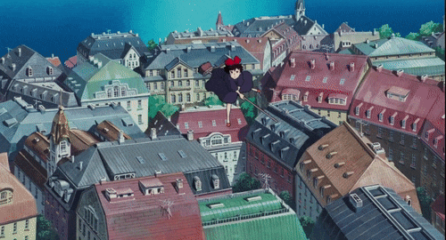
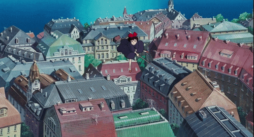

 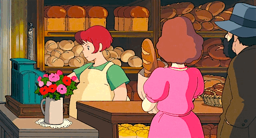
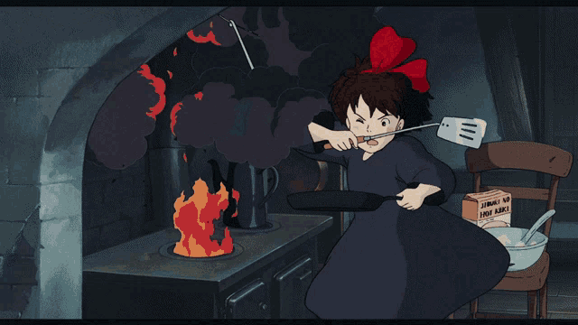
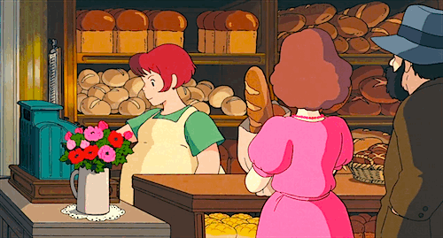
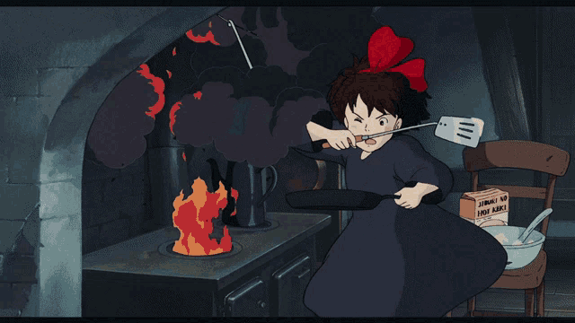
 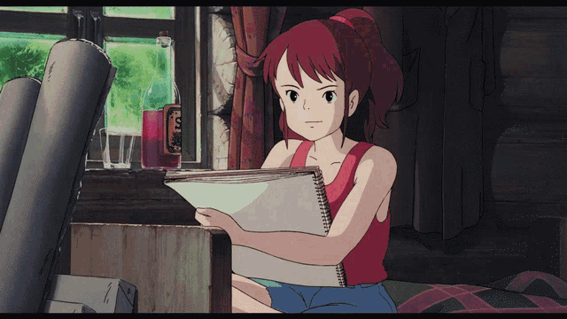
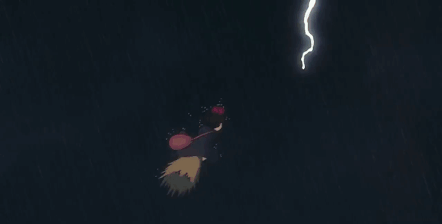
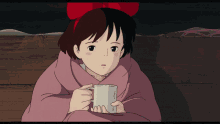
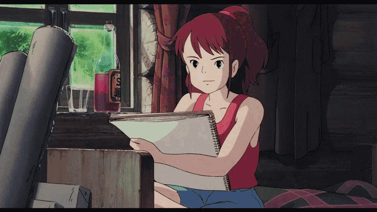
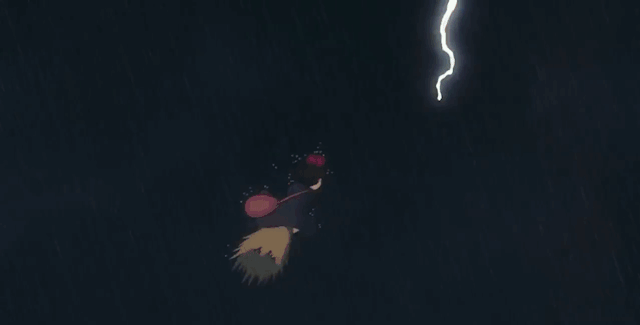
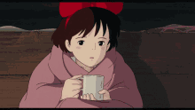